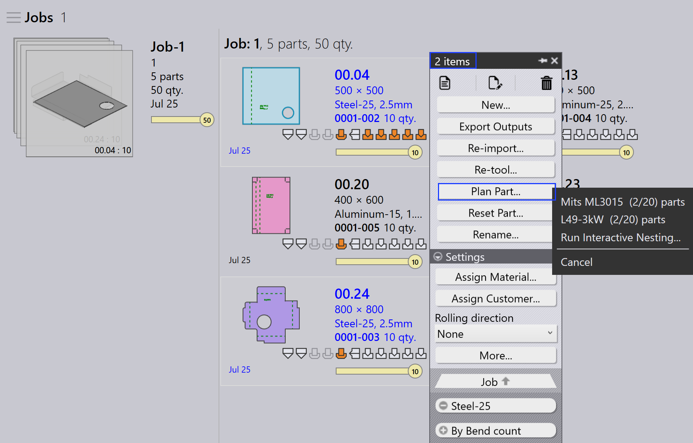

자동 계획
자동 계획은 벤딩 및 절단 작업의 계획 프로세스를 자동화합니다. 기계 사용을 최적화하고 재료 낭비를 줄이며 작업 우선 순위를 효율적으로 관리하는 데 도움이 됩니다.
일반적인 워크플로우는 먼저 벤딩 기계용 부품을 계획한 다음 절단 기계용 부품을 계획하는 것입니다.
벤딩 계획
벤딩 계획은 사용 가능한 벤딩 기계에 부품을 분배하는 방법을 정의합니다.
예시: 5개 부품(각 10개 단위)에 대한 벤딩 계획.
-
통합 작업 계획… 옵션을 클릭합니다.
-
5개 부품(50개 단위)이 TBC-5030 B27에 할당됩니다
-
계획 후 작업 상태는 총 50개 단위에 대해 Bend Planned로 업데이트됩니다. 작업 단계는 할당된 벤딩 기계 및 부품 수량으로 업데이트됩니다.


절단 계획 - 네스팅
벤딩 계획 후 적절한 절단 기계에 부품을 네스팅하여 절단 계획이 생성됩니다. 네스팅하는 방법에는 두 가지가 있습니다:
네스트를 위한 작업 계획 - 작업
*통합 작업 계획…*을 사용하여 작업의 모든 부품을 함께 네스팅합니다. 네스팅 엔진은 작업 우선 순위, 납기 및 재료를 기반으로 모든 부품을 자동으로 처리합니다. 이것은 전체 작업을 한 번에 네스팅하고 절단 대기열로 보내려는 경우에 이상적입니다.
-
*통합 작업 계획…*을 클릭하고 기계를 선택합니다.
-
Pmonitor 엔진이 네스팅 작업을 시작합니다.
-
엔진은 시트 사용을 최대화하기 위해 필요에 따라 작업을 분할합니다.
| 특정 재료를 특정 기계에 할당하여 네스팅할 수 없습니다. 예를 들어, 동일한 작업에서 _Material1_을 _Machine1_에, _Material2_를 _Machine2_에 네스팅할 수 없습니다. |

여기서 전체 작업은 L49-3kw의 5개 네스트로 네스팅됩니다. 작업 상태는 50 : Cutting Queue로 업데이트됩니다.
네스트를 위한 부품 계획 - 주문
주문 수준 네스팅, 즉 작업에서 선택한 부품만 네스팅하려면 Plan Part를 사용합니다. 일반적으로 부품을 마우스 오른쪽 버튼으로 클릭하고 *Same Material*을 선택하므로 동일한 재료의 부품만 함께 그룹화되고 네스팅됩니다.
이것은 네스팅할 부품을 제어하려는 경우에 유용합니다. 예를 들어 동일한 재료의 부품 또는 특정 배치입니다.


-
Job Detail 페이지에서 부품을 마우스 오른쪽 버튼으로 클릭하고 Same Material을 선택합니다. 동일한 재료의 모든 부품이 선택됩니다.
-
*Plan Part…*를 클릭하고 네스팅할 기계를 선택합니다.
-
엔진은 선택한 부품만 처리하고 네스트를 생성합니다.

여기서 steel-25는 Mits ML3015에 네스팅됩니다.